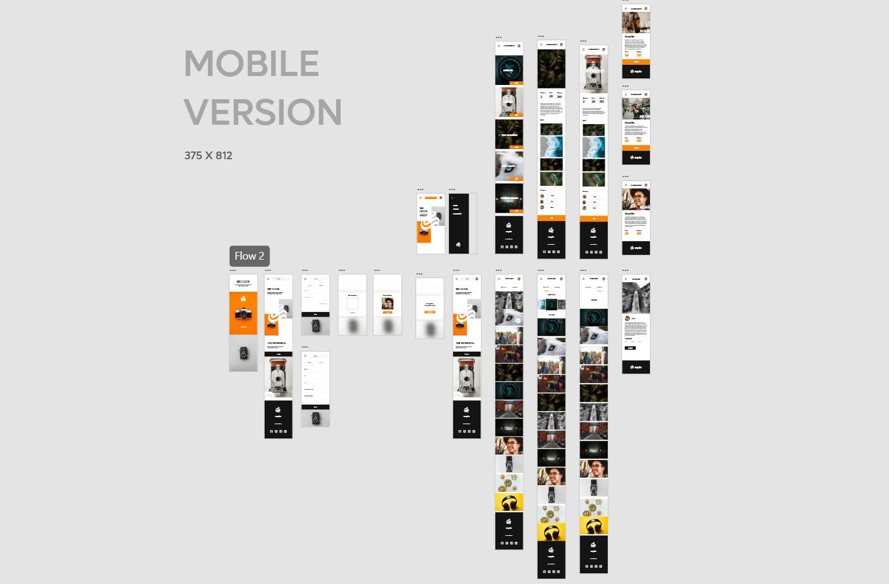
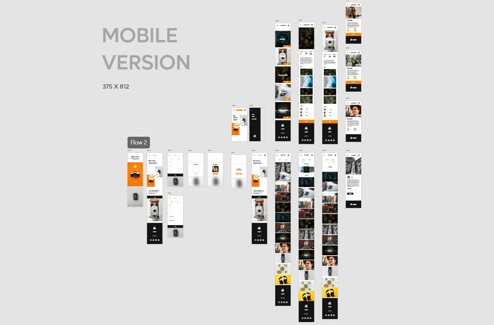

SEPIA - Responsive website design & UX case study
Yash Chaudhari


The Product
SEPIA is a responsive website for networking platforms for photographers. Sepia helps photographers to connect and read about them. Sepia also provides a facility to explore new posts done by photographers and join their community.
1 month , June - July 2022
SEPIA is a responsive website for networking platforms for photographers. Sepia helps photographers to connect and read about them. Sepia also provides a facility to explore new posts done by photographers and join their community.
-
The Probelm
New photographers want to connect with other photographers to learn, explore & take inspiration from experienced professionals in the field easily.
-
The Goal
Designing a responsive website for different screen sizes like desktop and mobile which helps new photographers to connect with people in the field.
-
My Role
UX Designer - Designing the app Sepia form conceptualization to delivery.
-
Responsibilities
Researching about the potential primary user base, digital wireframing, low & high fidelity prototyping conducting usability study, accounting for accessibility, and iterating on designs.
User research summary
I conducted interviews to understand the needs of the users. As a primary userbase. The research found that the new photographers, photography enthusiasts who want to join the photographer communities as per their interests. According to some secondary research, I found that primary userbase users belong to age group of 18 to 60 years.
User Persona
“I want to explore & join professionals in the field of photography to take inspiration. ”
Sarah
Sarah is a 20 years old school teacher & part-time photographer. She started photography 2 months ago. Sarah used to click photos of nature and wildlife. She wants to be a professional photographer. Sarah also learning photo editing. She wants to explore more photographers like her and other experienced people to improve her skills. She also started reading books and blogs about photography.
- Age : 20
- Home : Mumbai
- Education : Bachelor of Arts Student
- Occupation: Student & part-time photographer
Goals
- Want to connect with the photographer
- Join photographer’s teams
- to read about professionals in the field
- to take inspiration
PainPoints
- Cluttered Information annoys
- no story of the journey of photographers or pictures
- old looking platforms
- lot of distraction on general social media
User pain points
-
Community
New Photographers want to join with photographers with the same type of interest.
-
IA
Users want to read descriptive stories about photos or the journey of a photographer.
-
Visual
Users want a visually good-looking, modern & easy-to-use website experience.
Paper wireframes
Sketching is the first step I follow every time I design anything. For this project. For this project, I sketched out wireframes for the desktop first, then the mobile version. I also sketched wireframes for the tablet version too.
Digital Wireframes
Using Adobe XD, I converted my sketchings into digital wireframes to get more clear arrangements and layouts of different screens and elements for different screen sizes.


Low- Fidelity prototype
To check the website's functionality and user flow to complete tasks like creating account & joining communities. I used this prototype to check navigation and other user pain points of users.

Mockups
After usability study and refining wireframes I created high fidelity mockups modern and engaging as user’s need represents the final polished look of the product . I created mockups for both desktop and mobile version.
 

High-Fidelity Prototypes
High fidelity prototypes presented clear user flow of account creation to community joining. Also ued animations to engage users to meet their needs.


Accessibility considerations
-
1
All colors I used passes WCAG contrast test with AAA.
-
2
Used font size big enough at highly text areas like about sections for better readability. Aso used Big and clearly visible CTA for easy userflow.
Going Forward
-
Impact
SEPIA provides photographers, a dedicated platform on multiple screen-size devices to explore and join the photographer communities.
-
What did I learn?
Designing responsive user experiences for multiple device screen sizes taught me a new perspective on elements' placements and variations in the elements' proportions. I also learned the difference between native mobile apps and responsive websites for mobile devices during this project.
“Sepia is easy to use and a great place to read about photographers and their journy.”
— Quote from early user
Thank you for reviewing my work on the SIGOTO app and responsive website! If you like to see more or get in touch the contacts information is provided below.